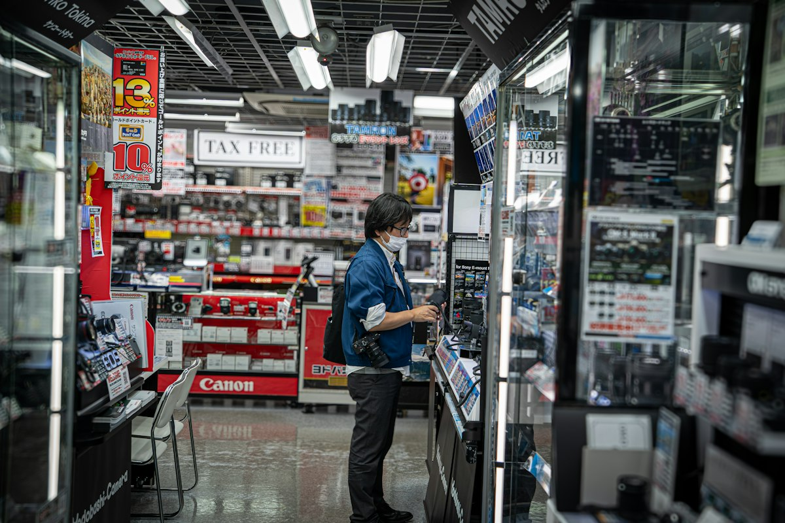

Late Apple Deals Report Channel Trouble Before They Report Savings
A list of surviving AirPods and Mac discounts is really a document about how tightly one manufacturer holds its retailers, and how much slack appeared this week.

The strikethrough at the top of an Apple deal page is typography, not measurement. It asks the reader to believe in an earlier price that nothing else in the transaction preserves. The Verge put that device to work on November 27, 2026, in a headline about discounts readers can still get.
The claim this piece defends: a surviving Apple discount is evidence about distribution before it is evidence about savings. The category carries the shallowest and most tightly managed price-cutting in mainstream consumer electronics.
An offer that outlives the event is usually reporting stock the channel needs to move, not generosity the channel has decided to display. Read that way, the list becomes an instrument. It describes how much control Apple keeps over retailers, and where that control bent under a date the industry agreed to treat as an exception. The bend is the interesting part.
A category that barely enters the event
Apple hardware sits oddly on the consumer electronics shelf. The company sets a list price and expects authorized resellers to hold it, which leaves a retailer very little room for a promotion. A partner who discounts past that room pays the difference out of its own margin, on its own decision, for its own reasons.
That arrangement explains the shape of every Apple deal roundup. The discounts that exist are modest, similar across sellers, and concentrated in products where margin is already thick. Accessories and refurbished units can move. A current laptop at a deep cut is the exception the list exists to record, and an exception is not a market.
What a discount depth actually measures
Retailers advertise savings as a percentage off list. That figure means almost nothing alone. A double-digit cut on earbuds sold at a wide margin is a routine promotion. The same cut on a laptop sold at a narrow margin is a structural decision, and it deserves a question about who paid for it.
A percentage is a ratio between two numbers the shopper can see and one the shopper cannot. The hidden term is the cost basis of that seller, on that configuration, on that morning. Nearly everything useful about a discount lives in the term nobody publishes, and a deal list never hints at it.
A clearance and a promotion are different objects
A promotion is a seller spending margin to acquire a customer. A clearance is a seller spending margin to remove an item from a warehouse. On a list page they look identical, because both arrive as a crossed-out figure and a smaller one beside it. Neither label appears on the page.
The accessory shelf follows the same logic. A charging brick carries enough markup that a seller can discount it and still profit on the sale. That is why accessories sit at the top of every list, and why their presence proves so little.
The distinction matters because a clearance leaks information the buyer wants. A discounted laptop is frequently a configuration the manufacturer is preparing to replace. The markdown is the market pricing that replacement into the offer before any announcement exists.
The buyer who chose by percentage now holds the slower machine at the older performance tier. That cost never appears beside the crossed-out figure. The smaller number is not a verdict. It is a line item.
Why survival is a weak signal
The strongest case for the late list runs like this. An offer that holds after the event is one a seller expects to keep, which makes it likelier to be real than the theater of a countdown banner. A price still standing on the Friday after the sale has survived the pressure to invent one.
That argument is genuine and still thin. The banner and the standing price can originate in exactly the same inventory decision. A seller sitting on unwanted stock has every reason to keep a fake countdown running straight through December. What a surviving offer reliably proves is patience in the accounting department.
It proves much less about value. A markdown that no competitor forced is a markdown a seller found comfortable. Comfort is not depth, and a list published at the end of a promotional week is not a comparison of the year's pricing.
Where the verification burden lands
Every deal list transfers a verification job to the reader. The page shows a current price and an earlier one struck through. The struck figure is the seller's own account of its own history, and a shopper has no instrument to check it except time and a second source.
That burden is heaviest where the savings are lightest, which is where Apple gear sits. A meaningful cut on a laptop justifies an afternoon of checking. A trivial cut on earbuds does not, and the sensible answer is to buy the device when it fails rather than when a calendar demands it.
The service a late list performs
A deal roundup does two jobs, and only one of them is the discount. The cheap job is curation: somebody with patience has checked which products moved at all across a set of sellers. That is a slower question than it looks, and a shopper cannot answer it from a search bar. The figures themselves are the smaller part of that service.
The second job is the one the headline advertises, and it does not survive contact with a price tracker. The only useful question about a discount is what this unit cost at its deepest point last year. A roundup publishes the seller's assertion about its own past, while a tracker publishes a series a reader can check.
That asymmetry is why the late list is worth opening even when the savings are not worth acting on. It tells a reader which corners of the catalogue the channel was permitted to bend this year. That map stays legible even when every figure on it is unverifiable. Nothing else on the page carries that weight, and nothing else in it survives the month.
Read the other way, the list is a calendar. A channel that releases stock in the closing days of November has already decided the unit is worth more as cash than as inventory. That decision is public, dated, and unrelated to how well the product performs at a desk a year later.
What this piece could not establish
The version of the source available for this article supplies a headline, a publication date and a product scope. It does not supply, in anything I could check, the pricing underneath. No original and discounted figures, no seller names, no model generation per item, no trade-in terms. Nothing confirming that stock was checked at publication.
So this piece argues about the category and not about the individual offers. That is a limit, not a method. A reader who wants the specific judgment should open each discounted item at the seller's own page. Then treat the struck-through number as an assertion until a second source repeats it.
What to do with the next list
Treat the Apple roundup as a supply document. Its entries show which products the channel permitted to move at a discount this year, and that pattern is stable enough to be worth reading. The percentages show how much one seller chose to lose on one unit, which fluctuates daily and belongs to its accounting.
Then apply a single filter. Buy the discounted item when it replaces something you already own that has failed, degraded or gone too slow for the work in front of it. That condition is the only part of the transaction you control, and it stays indifferent to the month on the calendar.
Keep the filter written down. Ignore the countdown banners. Record the price you actually paid, on the day you paid it, in a note of your own. In six months that note is the only record of the transaction that belongs to you rather than to the seller.
The word doing the work
The word carrying the most weight in that headline is not best. It is still. Best is a claim about the market that no seller can support. Still is a claim about inventory that the seller can support and has no intention of examining.
Survival is not evidence.
The offers themselves will be gone by December. The pattern underneath them will sit in the archive, describing how firmly one manufacturer holds its sellers and how much slack appeared in a single week.